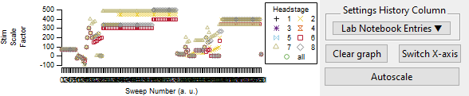

Navigation
index
next
|
previous
|
MIES Igor (main) Release_2.9_20250502-727-gbe223af4b documentation
»
User documentation
»
DataBrowser
»
Settings History
Settings History
¶

Settings History
¶
TODO fill me
Table of Contents
User documentation
AnalysisBrowser
DataBrowser
Settings
Overlay Sweeps
Channel Selection
Artefact Removal
Pulse Average (PA) plot
SweepFormula
Note
Dashboard
Sweep Control
Settings History
Relevant Colors
SweepBrowser vs DataBrowser
WaveBuilder
Da_Ephys
TPStorage
Automatic test pulse tuning
The Sweep Formula Module
Labnotebook descriptions
Analysis function parameters
SweepFormula PSC/PSP classification
Installation instructions
Developer
Bug reporting
Release notes
Group list
File list
Struct list
Namespace list
Todos
Deprecations
CalculateTPLikePropsFromSweep Algorithm
Igor Pro module for reading and writing NeurodataWithoutBorder files
Testpulse Analysis Algorithm
Async Framework
Labnotebook documentation for developers
Epoch Information
Important MIES concepts for developers
DAQ details
Thirty six hints for writing analysis functions
Previous topic
Sweep Control
Next topic
WaveBuilder
Quick search
Navigation
index
next
|
previous
|
MIES Igor (main) Release_2.9_20250502-727-gbe223af4b documentation
»
User documentation
»
DataBrowser
»
Settings History